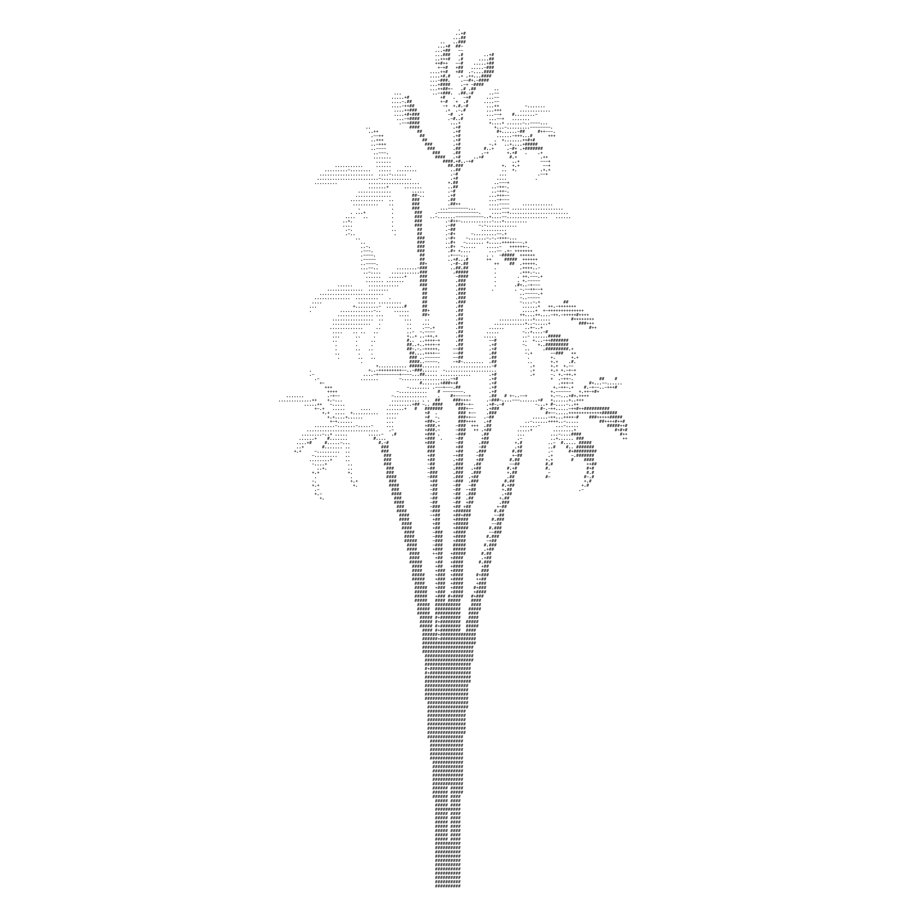

Sarah Madeline is a Canadian artist and writer based in Aliso Viejo, California. Madeline was chief editor and contributing writer for SCAN, a contemporary art publication at the University of Manitoba. She later became head curator at The Sunroom Artspace in Winnipeg, Manitoba, Treaty 1 territory. She has since moved to California to continue her practice.
Madeline’s work sifts through new and obsolete technology, to fuse the distinct qualities of each to one another. She utilizes analog and digital processes to reflect on flux and temporality, which are key elements in her practice. Sound, image, and natural materials are often present in her work to synthesize physical and virtual spaces. Madeline incorporates each medium to harness a balance between analyzing the past and anticipating the future.
Selected Exhibitions + Screenings
Publications
Editing
Curatorial Projects
Curatorial Collaborations
Education + Awards
email: sarah.e.madeline@gmail.com